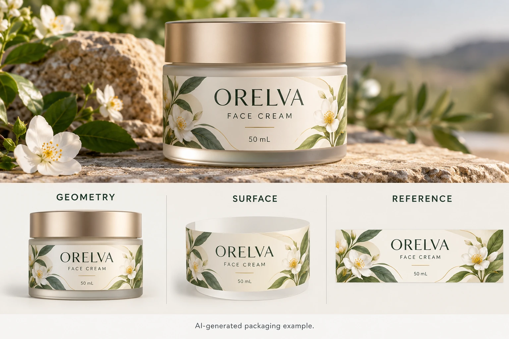

Record the geometry with the value
BYK-Gardner's guide to reliable gloss data explains that measurement geometry affects differentiation across gloss ranges. Its discussion also addresses repeatability, agreement between instruments and surface variation.
Use that background to ask for the actual method and geometry behind a supplied result. Do not add a universal acceptable gloss range to every label described as matte. The required appearance and tolerance need agreement for the relevant construction and reference.
Keep the instrument identification and reported unit with the value. If the supplier gives only a number, request the missing method information. Averaging it with another unexplained number does not repair the comparison.
Identify the specimen and surface
Record whether the specimen is flat or applied, the actual construction, relevant backing and the area measured. Ask the technical owner whether the surface shape, size and instrument arrangement support the proposed method. Do not assume a reading on a curved jar is equivalent to one on a flat label sample.
Include the printed area and finish. A botanical motif, an unprinted region and a broad dark panel may present different local surfaces. The comparison needs an agreed location rather than whichever patch is easiest to reach.
Where a flat representative specimen is used to support an applied-pack decision, document that connection and its limitations. A useful technical reference should not silently become a claim that every part of the bottle was measured.
Preserve preparation and reference condition
Ask which preparation and conditioning the agreed method requires, and record relevant handling. Keep an untouched or otherwise appropriately maintained reference identifiable. Do not clean or polish a sample using an improvised method immediately before measuring it.
Have the technical party confirm the instrument checks appropriate to its procedure. This article provides no calibration instruction, numerical drift limit or substitute for the manufacturer's documentation. A buyer can request the relevant method record without operating or certifying the instrument.
Keep known differences visible when two laboratories or suppliers are involved. If the methods cannot be aligned, ask what narrower comparison the available data supports rather than declaring one party wrong on the basis of the totals alone.
Compare readings alongside the appearance decision
The matte finish guide separates film and coating constructions. Gloss is one surface property in that larger decision; it does not establish tactile feel, scuff behavior or protection by itself.
Review the agreed visible reference under consistent conditions too. If the visual impression and the recorded results seem inconsistent, identify the exact observation and ask the technical owner which further assessment is appropriate. Do not keep changing the numeric target until it appears to explain an uncontrolled photograph.
The color matching guide covers the related viewing context. Keep color acceptance and gloss acceptance identifiable even when both contribute to the same finished pack appearance.
| Record | Information to obtain | Comparison check |
|---|---|---|
| Construction | Face, print and finish references | Same proposed surface? |
| Reference | Accepted specimen and condition | Relevant target still identifiable? |
| Geometry | Agreed measurement angle/method | Same property being reported? |
| Specimen | Flat/applied, location, backing and shape | Comparable sampling surface? |
| Instrument | Identification and relevant method checks | Appropriate technical context recorded? |
| Preparation | Required conditioning and handling | Uncontrolled alteration avoided? |
| Results | Reported observations and method scope | Variation and limitations visible? |
| Acceptance | Technical and brand decision | Agreed criterion met within its scope? |
First match construction and reference. Have the technical parties resolve method and specimen differences, obtain the relevant results and review the appearance decision. Keep acceptance pending when an important comparison field remains unknown.

Use numbers where they improve the decision
A hypothetical dry presentation pack with a satisfactory agreed reference may not need an elaborate new numerical specification. The team should define proportionate evidence for the actual appearance requirement.
A repeat program requiring controlled surface consistency has a reason to establish a suitable technical method and review process. Its criterion should belong to the actual construction and accepted reference, rather than a generic matte target copied from another industry.
For cosmetic label quotations, provide the container, artwork, quantity, finish reference and the two result records that cannot yet be compared. State the appearance decision that matters. Use the form to draft the question, then send reports and references by email or WhatsApp. Ask for comparable measurement context before asking which number is right.